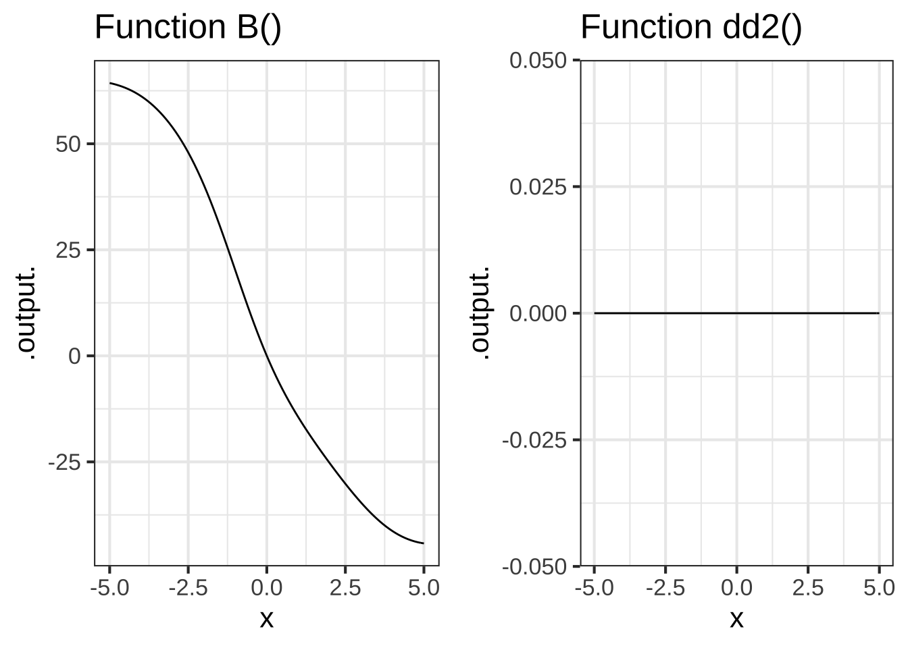
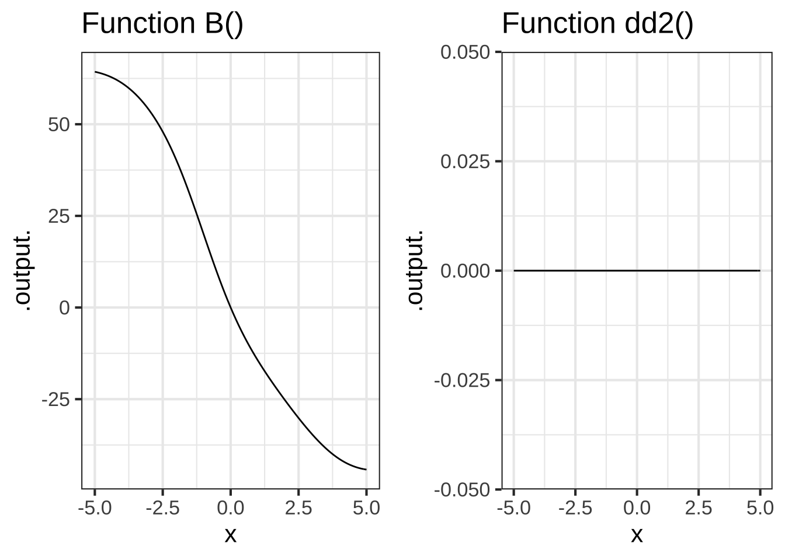

22 Derivatives of assembled functions
In Section 19.4 we used h-theory to confirm our claims about the derivatives of many of the pattern-book functions. In this chapter, we’re going to use h-theory to find algebraic rules to calculate the derivatives of linear combinations of functions, products of functions, and composition of functions. Remarkably, we can figure out these rules without having to say specifically which functions are being combined. So the rules can be written in terms of abstractions: \(f()\), \(g()\), and \(h()\). Later, we’ll apply those rule to specific functions, to show how the rules are used in practical work.
22.1 Using the rules
When you encounter a function that you want to differentiate, you first have to examine the function to decide which rule you want to apply. In the following, I’m going to use the names \(f()\) and \(g()\), but in practice the functions will often be basic modeling functions, for instance \(e^{kx}\) or \(\sin\left(\frac{2\pi}{P}t\right)\) or \(\ln(x/x_0)\), etc.
Step 1: Identify f() and g()
We will write the rules in terms of two function names, \(f()\) and \(g()\), which can stand for any functions whatsoever. It’s rare to see the product or the composition written explicitly as \(f(x)g(x)\) of \(f(g(x))\). Instead, you are given something like \(e^x \ln(x)\). The first step in differentiating the product or composition is to identify what are \(f()\) and \(g()\) individually.
In general, \(f()\) and \(g()\) might be complicated functions, themselves involving linear combinations, products, and composition. But to get started, we’ll practice with cases where they are simple, pattern-book functions.
Step 2: Find f’() and g’()
For differentiating either products or compositions, you will need to identify both \(f()\) and \(g()\) (the first step) and then compute the derivatives \(\partial_x f()\) and \(\partial_x g()\). That is, you’ll write down four functions.
Step 3: Apply the relevant rule
Recall from Chapter 11 that will will be working with three important forms for creating new functions out of existing functions:
- Linear combinations, e.g. \(a f(x) + bg(x)\)
- Products of functions, e.g. \(f(x) g(x)\)
- Compositions of functions, e.g. \(f\left(g(x)\right)\)
22.2 Linear combinations and h-theory
Linear combination is one of the ways in which we make new functions from existing functions. As you recall, linear combination involves scaling functions and then adding the scaled functions. We can easily use \(h\) to show what is the result of differentiating a linear combination of functions. We’ll use \(f(x)\) and \(g(x)\) as the names that could stand for any function whatsoever. And we’ll let \(b\) be the name of a scalar. First, let’s figure out what is \(\partial_x\, b f(x)\), Going back to writing \(\partial_x\) in terms of a slope function: \[\partial_x\, b\,f(x) = \frac{b\, f(x + h) - b\,f(x)}{h}\\ \ \\ = b \frac{f(x+h) - f(x)}{h} = b\, \partial_x f(x)\] In other words, if we know the derivative \(\partial_x\, f(x)\), we can easily find the derivative of any scaled version of \(f()\). Notice that even though \(h\) was used in the derivation, it appears nowhere in the result \(\partial_x\, b\,f(x) = b\, \partial_x\, f(x)\). The \(h\) is solvent to get the paint on the wall and evaporates once its job is done.
Now consider the derivative of the sum of two functions, \(f(x)\) and \(g(x)\): \[\partial_x\, \left[f(x) + g(x)\right] =\\ \ \\ =\frac{\left[f(x + h) + g(x + h)\right] - \left[f(x) + g(x)\right]}{h} \\ \ \\ = \frac{\left[f(x+h) -f(x)\right] + \left[g(x+h) - g(x)\right]}{h}\\ \ \\ = \frac{\left[f(x+h) -f(x)\right]}{h} + \frac{\left[g(x+h) - g(x)\right]}{h}\\ \ \\ = \partial_x\, f(x) + \partial_x\, g(x)\]
Using these two rules together, we can differentiate any linear combination of functions in terms of the differentiated functions themselves:
\[\partial_x\ \left[\strut a_1 g_1(x) + a_2 g_2(x) + a_3 g_3(x) + \cdots\right] =\ \ \ \ \ \ \ \ \ \ \\ \ \\ \ \ \ \ \ \ \ \ \ a_1 \partial_x\, g_1(x) + a_2 \partial_x\, g_2(x) + a_3 \partial_x\, g_3(x) + \cdots\]
Because of the way that \(\partial_x\) can be “passed through” a linear combination, mathematicians say that differentiation is a linear operator. Consider this new fact about differentiation as a down payment on what will eventually become a complete theory telling us how to differentiate a product of two functions or the composition of two functions. We’ll lay out the \(h\)-based algebra of this in the next two sections.
We can summarize the h-theory result for linear combinations this way:
The derivative of a linear combination is the linear combination of the derivatives.
That is:
\[\partial_x \left[\strut \color{magenta}{a} \color{brown}{f(x)} + \color{magenta}{b} \color{brown}{g(x)}\right] = \color{magenta}{a} {\large\color{brown}{f'(x)}} + \color{magenta}{b} {\large\color{brown}{g'(x)}}\] ::: {.workedexample data-latex=""} The derivative of a polynomial is a polynomial of a lower order.
Consider the polynomial \[h(x) = \color{magenta}{a}\color{brown}{x^0} + \color{magenta}{b} \color{brown}{x^1} + \color{magenta}{c} \color{brown}{x^2}\] The derivative is \[\partial_x h(x) = \color{magenta}{a}\color{brown}{0} + \color{magenta}{b}\, \color{brown}{1} + \color{magenta}{c}\, \color{brown}{2 x} = \color{magenta}{b} + \color{magenta}{2 c}\ x\] :::
22.3 Products and h-theory
The question at hand is how to compute the derivative \(\partial_x f(x) g(x)\). Needless to say, \(f(x) g(x)\) is just a function so it’s perfectly appropriate to use numerical methods in exactly the same way you would for any other function. So let’s make the question more specific by asking how to compute the derivative \(\partial_x f(x) g(x)\) if you already know \(\partial_x f(x)\) and \(\partial_x g(x)\).
This situation arises particularly when \(f(x)\) and \(g(x)\) are pattern-book functions for which you already have memorized \(\partial_x f(x)\) and \(\partial_x g(x)\) or are basic modeling functions whose derivatives you will memorize in Section 22.6.
The purpose of this section is to derive the formula for \(\partial_x f(x) g(x)\) in terms of \(f(x)\), \(g(x)\), \(\partial_x f(x)\) and \(\partial_x g(x)\). This formula is called the product rule. The point of showing a derivation of the product rule is to let you see how the logic of evanescent \(h\) plays a role. In practice, everyone simply memorizes the rule, which has a beautiful, symmetric form:
\[\text{Product rule:}\ \ \ \ \partial_x \left[\strut f(x)g(x)\right] = \left[\strut \partial_x f(x)\right]\, g(x) + f(x)\, \left[\strut\partial_x g(x)\right]\] and is even prettier in Lagrange notation (where \(\partial_x f(x)\) is written \(f'\)): \[ \left[\strut f g\right]' = f' g + f g'\]
As with all derivatives, the product rule is based on the instantaneous rate of change \[F'(x) \equiv \lim_{h\rightarrow 0} \frac{F(x+h) - F(x)}{h}\] introduced in Section 9.6.
We also need two other statements about \(h\) and functions:
- The derivative \(F'(x)\) is the slope of of \(F()\) at input \(x\). Taking a step of size \(h\) from \(x\) will induce a change of output of \(h F'(x)\), so \[F(x+h) = f(x) + h F'(x)\ .\]
- Any result of the form \(h F(x)\), where \(F(x)\) is finite, gives 0. More precisely, \(\lim_{h\rightarrow 0} h F(x) = 0\)
For simplicity, we’ll leave out the \(\lim_{h\rightarrow 0}\) until the last step; you can imagine that it’s being written in every step. We do some algebraic manipulation of the instantaneous rate of change.
Suppose the function \(F(x) \equiv f(x) g(x)\), a product of the two functions \(f(x)\) and \(g(x)\).
\[\require{cancel} F'(x) = \partial_x \left[\strut f(x) g(x) \right] \equiv \frac{f(x+h) g(x+h) - f(x) g(x)}{h}\] \[= \frac{f(x+h) \left[\strut g(x) + h g'(x) \right] - f(x) g(x)}{h} \] \[=\frac{\left[\strut f(x+ h) - f(x)\right] g(x) + f(x+h) h\, g'(x)}{h}\] \[=\left[\strut \frac{f(x+h) - f(x)}{h}\right] g(x) + \frac{\left[\strut f(x) + h f'(x)\right]h\,g'(x)}{h}\] \[= f'(x) g(x) + \frac{f(x) h g'(x)}{h} + \frac{h f'(x) h g'(x)}{h}\]
\[= f'(x) g(x) + f(x) g'(x) + \cancel{h f'(x) g'(x)}\]
\[=f'(x) g(x) + f(x) g'(x)\]
The last step relies on statement (2) above.
The formula that emerges from h-theory applied to products of functions is called, naturally enough, the product rule. Written in terms of the pronoun functions \(f()\) and \(g()\), the product rule is
\[\Large\partial_x \left[\strut \color{magenta}{f(x)}\times \color{brown}{g(x)}\right] = \color{magenta}{[\partial_x f(x)]} \times \color{brown}{g(x)}\ \ {\mathbf +} \ \ \color{magenta}{[\partial_x g(x)]} \times \color{brown}{f(x)}\] Some people find it easier to read the rule in Lagrange shorthand, where \(f\) and \(g\) stand for \(f(x)\) and \(g(x)\) respectivly, and \(f'\) (“f-prime”) and \(g'\) (“g-prime”) stand for \(\partial f()\) and \(\partial g()\).
\[\Large\text{Lagrange shorthand:}\ \ \partial[\color{magenta}f \times \color{brown}g] = [\color{magenta}f \times \color{brown}g]' = \color{magenta}{f'}\color{brown}g + \color{brown}{g'}\color{magenta}f\] Let’s start with some very simple examples where we already know the answer:
- We know \(\partial_x x^3 = 3 x^2\) so lets check when we write \(x^3\) as \(x^2 x\): \[\large\partial [\color{magenta}x \times \color{brown}{x^2}] = \color{magenta}{[\partial x]} \times \color{brown}{x^2} \ +\ \color{brown}{[\partial x^2]} \times \color{magenta}x =\color{magenta}1\times \color{brown}{x^2} + \color{brown}{2x} \times \color{magenta}x = 3 x^2\]
22.4 Function compositions and h-theory
The formula for the derivative of the composition \(\partial_x \left[\strut f(g(x))\right]\) in terms of \(f(y)\), \(g(x)\), \(f'(y)\) and \(g'(x)\) is usually called the chain rule rather than the “composition rule.” It is: \[\partial_x \left[\strut f(g(x))\right] = \left[\strut f(g(x))\right]' = f'(g(x)) g'(x)\] The derivation relies on two closely related statements:
- \(g(x + h) = g(x) + h g'(x)\)
- \(f\left[\strut(g(x + h)\right) = f\left[\strut g(x) + hg'(x)\right] = f(g(x)) + f'(g(x)) h g'(x)\)
Apply these statements to the instantaneous rate of change of \(f(x)g(x)\):
\[\partial_x f(x) g(x) \equiv \frac{f(g(x+h)) - f(g(x))}{x}\] \[= \frac{\cancel{f(g(x))} + f'(g(x))h g'(x) - \cancel{f(g(x))}}{h}\] \[= f'(g(x)) g'(x)\]
22.5 The chain rule
The rule that results from applying h-theory to function compositions is called the chain rule, presumably because the result involves a chain of derivatives. It is used so often that models simply memorize it.
Written in terms of the pronoun functions \(f()\) and \(g()\), the rule for the composition \(f(g(x))\) is
\[\large\partial_x \left[\strut \color{magenta}{f\left(\strut\right.}\strut \color{brown}{g(x)}\color{magenta}{\left.\right)}\right] = [\color{magenta}{\partial_x f}](\color{brown}{g(x)}) \times [\color{brown}{\partial_xg(x)}]\] Or, using the Lagrange prime notation \[\large\text{Lagrange shorthand:}\ \ \partial[\color{magenta}f(\color{brown}g)] = \color{magenta}{f'} (\color{brown}g) \times \color{brown}{g'}\]
We’ll practice with some simple examples where we already know the result:
- \(e^{2x}\). Recognizing this as \(e^x \times e^x\), we can apply the product rule.
\(\partial_x [\color{magenta}{e^x} \times \color{brown}{e^x}] = \color{magenta}{[\partial_x e^x]} \times \color{brown}{e^x} \ + \ \color{brown}{[\partial_x e^x]} \times \color{magenta}{e^x} = 2 e^x e^x = 2 e^{2x}\).
For the chain rule, recognize that \(g(x) \equiv 2x\) is the interior function in \(e^{2x}\) and \(f(x) \equiv \exp(x)\) is the exterior function. Thus \(\partial_x e^{2x} = f'(g(x)) g'(x) = \exp(g(x)) 2 = 2 e^{2x}\).
-
\(\partial_x [\exp\left(\ln(x)\right)] = [\partial_x \exp](\ln(x)) \times \partial_x \ln(x) = \exp\left(\ln(x)\right) \times 1/x\)
Since \(\exp\left(\ln(x)\right) = x\) we can simplify the above \[\partial_x [\exp\left(\ln(x)\right)] = \exp\left(\ln(x)\right) \times 1/x = x/x = 1\] which is consistent with what we know about \(\partial_x x\).
-
\(\partial[ \recip(x^2)] = [\partial \recip](x^2) \times \partial_x x^2 = [\partial_x\, \recip](x^2) \times 2 x\)
Since \(\partial_x \recip(x) = \partial_x [1/x] = \partial_x x^{-1} = -x^{-2} = - \frac{1}{x^2}\), we can simplify the above to \(\partial_x[ \recip(x^2)] = [\partial_x \recip](x^2) \times \partial_x x^2 = - \frac{1}{(x^2)^2} \times 2 x = -2 \frac{x}{x^4} = -2 x^{-3}\)
The chain rule lets us use what we know about the derivatives of the pattern-book functions to figure out the derivatives of the basic modeling functions. Remember, that each of the basic modeling functions is the composition of a pattern-book function with \(\line(x) \equiv ax + b\).
- \(\large\partial_x [\color{brown}\sin(\color{magenta}{a x + b})] = [\partial_x \color{brown}{\sin}](\color{magenta}{a x + b}) \times \partial_x [\color{magenta}{ax + b}] = \color{brown}{\cos}(\color{magenta}{ax + b}) \times \color{magenta}a\).
In 1734, famous philosopher George Berkeley (1685-1753) published a long-titled book: The Analyst: A Discourse Addressed to an Infidel Mathematician: Wherein It Is Examined Whether the Object, Principles, and Inferences of the Modern Analysis Are More Distinctly Conceived, or More Evidently Deduced, Than Religious Mysteries and Points of Faith. In The Analyst, Berkeley took issue with the arguments of that time that it is legitimate to divide by \(h\) when, ultimately, \(h\) will be replaced by zero. Calling \(h\) an “evanescent increment,” he asked,
“And what are these same evanescent Increments? They are neither finite Quantities nor Quantities infinitely small, nor yet nothing. May we not call them the ghosts of departed quantities?”
Interesting, Berkeley believed that the ghost of \(h\) yielded correct results. His objection was that the framers of calculus had made two, canceling errors.
“[B]y virtue of a two fold mistake you arrive, though not at science, yet truth.”
Berkeley was saying that calculus had not yet been put on a solid logical foundation. It was to be more than a century after Berkeley’s death until this work was accomplished. Once accomplished, the results that had been claimed true all along were confirmed.
22.6 Derivatives of the basic modeling functions
The basic modeling functions are the same as the pattern-book functions, but with bare \(x\) replaced by \(\line(x)\). In other words, each of the basic modeling functions is a composition of the corresponding pattern-book function with \(\line(x)\). As such, the derivatives of the basic modeling functions can be found using the chain rule.
Suppose \(f()\) is one of our pattern-book functions. Then \[\large\partial_x f(\color{magenta}{ax + b}) = \color{brown}{a} f'(\color{magenta}{ax + b})\] where \(\color{brown}{a}\) is the derivative with respect to \(x\) of \(\color{magenta}{ax + b}\).
Here are the steps for differentiating a basic modeling function \(\color{brown}{f}(\color{magenta}{a x + b})\) where \(f()\) is one of the pattern-book functions:
- Step 1: Identify the particular pattern-book function \(\color{brown}{f}()\) and write down its derivative \(\color{brown}{f'}\). For example, if \(f()\) is \(\sin()\), then \(f'()\) is \(\cos()\).
- Step 2: Find the derivative of the linear interior function. If the function is \(\color{magenta}{ax + b}\), then the derivative is \(\color{magenta}{a}\). If the interior function is \(\frac{2\pi}{P}(t-t_0)\), the derivative is \(\frac{2 \pi}{P}\).
- Step 3: Write down the original function \(\large\color{brown}{f}(\color{magenta}{a x + b})\) but replace \(\large\color{brown}{f}\) with \(\large \color{brown}{f'}\) and pre-multiply by the derivative of the interior function. For instance, \[\partial_x f(\color{magenta}{ax + b}) = {\large \color{magenta}{a}}{\large f'}(\color{magenta}{ax + b})\] Another example: \[\partial_t \color{brown}{\sin}\left(\color{magenta}{\frac{2 \pi}{P}(t-t_0)} \right) = {\large \color{magenta}{\frac{2 \pi}{P}}}\color{brown}{\large\cos}\left(\color{magenta}{\frac{2 \pi}{P}(t-t_0) }\right) \]
By convention, there are different ways of writing \(\line(x)\) for the different pattern-book functions, for instance:
\[\text{Pattern-book function} \ \ \ \longrightarrow\ \ \ \text{Basic modeling function}\\ \ \\ \sin(x)\ \ \ \longrightarrow\ \ \ \sin\left(\strut2 \pi \left[x-x_0\right]/P\right)\\ \exp(x)\ \ \ \longrightarrow\ \ \ \exp(k x)\\ x^2 \ \ \ \longrightarrow\ \ \ \left[mx + b\right]^2\\ 1/x \ \ \ \longrightarrow\ \ \ 1/\left[mx + b\right]\\ \ln(x) \ \ \ \longrightarrow\ \ \ \ln(a x + b)\\\]
The rule for the derivative of any basic modeling function \(f(\line(x))\) is \[\partial_x f(\line(x)) = \partial_x \line(x) \times \partial_x f\left(\strut\line(x)\right)\]
To illustrate:
- \(\partial_x e^{\color{magenta}{kx}} = {\large\color{magenta}{k}}\, e^{\color{magenta}{kx}}\) where \(\line(x) = kx\).
- \(\partial_x \sin(2\pi (x-x_0)/P) = \frac{2\pi}{P} \sin(2\pi (x-x_0)/P)\) where \(\line(x) = 2\pi (x-x_0)/P)\).
- \(\partial_x (mx + b)^2 = m\, 2 (m x + b) = 2 m^2 x + m^2 b\) where \(\line(x) = mx + b\).
- \(\partial_x \text{reciprocal}(mx + b) = \partial_x \frac{1}{mx + b} = - \frac{m}{(mx + b)^2}\) where \(\line(x) = mx + b\) and we use the fact that \(\partial_x \text{reciprocal}(x) = - 1/x^2\)
- \(\partial_x \ln(a x + b) = a/(ax+b)\)
- \(\partial_x \pnorm(x, \text{mean}, \text{sd}) = dnorm(x, \text{mean}, \text{sd})\).
- \(\partial_x \dnorm(x, \text{mean}, \text{sd}) = - \frac{x}{\text{sd}} \dnorm(x, \text{mean}, sd)\)
You will be using the derivatives of the basic modeling functions so often, that you should practice and practice until you can write the derivative at a glance.
There are many possible implementations of the general concept of hump functions and sigmoidal functions. The one we use in this book is \(\dnorm()\) for the hump and \(\pnorm()\) for the sigmoid.
The names \(\dnorm\) and \(\pnorm\) are worth remarking on. As we’ve said before, \(\dnorm()\) is called the gaussian function in many fields of science and engineering. It is also a centrally important function in statistics, where it is usually called the normal function. (That’s how important it is: it’s just “normal.”) You may also have heard the normal function described as a “bell-shaped curve.”
In statistical nomenclature, \(\dnorm()\) is called the “normal probability density function (PDF)” and \(\pnorm()\) is called the “normal cumulative density function (CDF).” That’s way too wordy for our purposes. So, for brevity, we have adopted the R name for those functions: dnorm() and pnorm().
Owing to the origin of the names \(\dnorm\) and \(\pnorm\), we are writing the parameters of the functions—mean and sd—using the computer language notation. The pattern-book functions are just \(\dnorm(x)\) and \(\pnorm(x)\), without listing the parameters. But the basic modeling functions, with parameters, are written \(\dnorm(x, \text{mean}, \text{sd})\) and \(\dnorm(x, \text{mean}, \text{sd})\). This violates the convention that the basic modeling functions are the composition of the pattern-book functions with \(\line(x)\). But \(\dnorm()\) doesn’t actually work this way because, by convention, the amplitude of the peak of \(\dnorm()\) changes with the input parameter sd. That’s not true for any other basic modeling function.
22.7 Exponentials and logarithms (optional)
The natural logarithm function, \(\ln(x)\), is one of our basic modeling functions. The digit() function, introduced in Chapter 15 is different, the logarithm-base-10, written \(\log_{10}(x)\) or log10(x). Ten is an integer, and a nice number to use in arithmetic. So in practice, it’s “natural” to use \(\log_{10}()\). The “natural” in the “natural logarithm” means something different.
The base of the natural logarithm is the number called Euler’s constant and written \(e\). As a celebrity number, \(e\) is right up there with \(\pi\) and \(-1\). Just as \(\pi\) has a decimal expansion that is infinitely long, the familiar \(\pi = 3.14159265358979...\), Euler’s constant has an infinitely long decimal representation: \(e = 2.71828182845905...\)
It’s not obvious at first glance why \(e = 2.71828182845905...\) should be called “natural” by mathematicians. The reason is not the number itself, but
- \(\ln(x)\) is the inverse of \(e^x\), which is special for being invariant under differentiation: \(\partial_x e^x = e^x\).
- The derivative \(\partial_x \ln(x)\) which has a particularly simple form, namely, \(1/x\).
Let’s look at the log-base-10 and it’s computer-savvy cousin log-base-2. The very definition of logarithms means that both 10 and 2 can be written \[10 = e^{\ln(10)}\ \ \ \text{and}\ \ \ 2 = e^{\ln(2)}\] This implies that the base-10 and base-2 exponential functions can be written
\[10^x = \left[\strut e^{\strut\ln(10)}\right]^x = e^{\ln(10)x} \ \ \ \text{and}\ \ \ 2^x = \left[\strut e^{\strut\ln(2)}\right]^x = e^{\ln(2) x}\] Calculating \(\partial_x 10^x\) or \(\partial_x 2^x\) is a matter of applying the chain rule:
\[\partial_x [10^x] = \partial_x [e^{\ln(10)x}] = e^{\ln(10)x} \times \ln(10) \ =\ 2.3026 \times 10^x\] and \[\partial_x [2^x] = \partial_x [e^{\ln(2)x}] = e^{\ln(2)x} \times \ln(2) \ = \ 0.6931 \times 2^x\] Like \(e^x\), the derivatives of \(10^x\) and \(2^x\) are proportional to themselves. For \(e^x\) the constant of proportionality is 1, a very natural number indeed.
22.8 Exercises
Exercise 22.01:  jYXYTF
jYXYTF
Section 22.1 explains that in differentiating a linear combination of two functions, or a product of two functions, or one function composed with another, your first task is to identify the two functions \(f()\) and \(g()\) involved. Second, compute the derivative of each of those functions on its own: \(\partial_x f(x)\) and \(\partial_x g(x)\).
Carry out these two tasks for each of the combined functions shown in the table. (The first row has been done for you as an example.)
| Combination | \(f()\) | \(g()\) | \(\partial_x f()\) | \(\partial_x g()\) |
|---|---|---|---|---|
| \(e^x \ln(x)\) | \(\ln(x)\) | \(e^x\) | \(\recip\) (that is \(1/x\)) | \(e^x\) |
| \(sin(e^x)\) | ||||
| \(x + x^2\) | ||||
| \(1/\sin(x)\) | ||||
| \(\pnorm(x)^2\) | ||||
| \(\sqrt{\pnorm(x)}\) | ||||
| \(\pnorm(x^2)\) | ||||
| \(pnorm(sin(x))\) |
Exercise 22.02: 3ICCCz
For each of the following, say whether the function is a composition \(f(g(x))\) or a product \(f(x) g(x)\), or neither.
Question A What sort of combination is \(h_1(x)\equiv \ln(x) e^x\)?
product\(\heartsuit\) composition︎✘ neither︎✘
Question B What sort of combination is \(h_2(x)\equiv \sin(x) \cos(x)\)?
product\(\heartsuit\) composition︎✘ neither︎✘
Question C What sort of combination is \(h_3(x) \equiv \sin(\cos(x))\)?
product︎✘ composition\(\heartsuit\) neither︎✘
Question D What sort of combination is \(h_4(x) \equiv e^{\ln(x)}\)?
product︎✘ composition\(\heartsuit\) neither︎✘
Question E What sort of combination is \(h_5(x) \equiv \sin(x) - \cos(x)\)?
product︎✘ composition︎✘ neither\(\heartsuit\)
Question F What sort of combination is is \(h_6(x) \equiv e^{x^2}\)?
product︎✘ composition\(\heartsuit\) neither︎✘
Question G What sort of combination is \(h_7(x) \equiv \pnorm(x^2)\)?
product︎✘ composition\(\heartsuit\) neither︎✘
Question H What sort of combination is \(h_8(x) \equiv \pnorm(x) \dnorm(x)\)?
product\(\heartsuit\) composition︎✘ neither︎✘
Question I What sort of combination is \(h_9(x) \equiv 1/\sin(x)\)?
- product
︎✘‥‥‥‥‥‥‥‥‥‥‥‥‥‥‥‥‥‥‥‥‥‥‥‥‥‥‥‥‥‥‥‥‥‥‥‥‥‥‥‥‥‥‥‥‥‥‥‥‥‥‥‥‥‥‥
- composition
Excellent!Remember, \(1/\sin(x)\) is the same as \(\recip(\sin(x))\).
- neither
︎✘‥‥‥‥‥‥‥‥‥‥‥‥‥‥‥‥‥‥‥‥‥‥‥‥‥‥‥‥‥‥‥‥‥‥‥‥‥‥‥‥‥‥‥‥‥‥‥‥‥‥‥‥‥‥‥
Exercise 22.04: QFzIOl
In function compositions of the form \(f\left(\strut g(x)\right)\), the function \(f()\) is called the exterior function and \(g()\) is called the interior function.
Question A In \(\cos(\ln(x))\) which is the interior function?
-
\(\ln()\)
Nice!‥‥‥‥‥‥‥‥‥‥‥‥‥‥‥‥‥‥‥‥‥‥‥‥‥‥‥‥‥‥‥
-
\(\cos()\)
︎✘This is the exterior function.‥
-
\(\sin()\)
︎✘Sine has nothing to do with it!
- None of the above
︎✘‥‥‥‥‥‥‥‥‥‥‥‥‥‥‥‥‥‥‥‥‥‥‥‥‥‥‥‥‥‥‥
- It’s not a function composition
︎✘‥‥‥‥‥‥‥‥‥‥‥‥‥‥‥‥‥‥‥‥‥‥‥‥‥‥‥‥‥‥‥
Question B In \(1/\sin(x)\) which is the exterior function?
-
\(\recip()\)
Correct.‥‥‥‥‥‥‥‥‥‥‥‥‥‥‥‥‥‥‥‥‥‥‥‥‥‥‥‥‥‥
-
\(\cos()\)
︎✘‥‥‥‥‥‥‥‥‥‥‥‥‥‥‥‥‥‥‥‥‥‥‥‥‥‥‥‥‥‥
-
\(\sin()\)
︎✘This is the interior function.
- None of the above
︎✘‥‥‥‥‥‥‥‥‥‥‥‥‥‥‥‥‥‥‥‥‥‥‥‥‥‥‥‥‥‥
- It’s not a function composition
︎✘‥‥‥‥‥‥‥‥‥‥‥‥‥‥‥‥‥‥‥‥‥‥‥‥‥‥‥‥‥‥
Question C In \(\sin\left(\frac{2 \pi}{P} (t-t_0)\right)\) which is the exterior function?
-
\(t-t_0\)
︎✘
-
\(\frac{2\pi}{P}\)
︎✘
-
\(\frac{2\pi}{P} t\)
︎✘
-
\(\frac{2\pi}{P} (t-t_0)\)
︎✘
-
\(\sin()\)
Good.
- None of the above
︎✘
- It’s not a function composition
︎✘
Question D In \(\sin\left(2 \pi (t-t_0)/P\right)\) which is the interior function?
-
\(t-t_0\)
︎✘That’s part of it.‥‥‥‥‥‥‥‥‥‥‥‥
-
\(2\pi /P\)
︎✘That’s part of it.‥‥‥‥‥‥‥‥‥‥‥‥
-
\(2\pi t /P t\)
︎✘That’s part of it.‥‥‥‥‥‥‥‥‥‥‥‥
-
\(2\pi (t-t_0)/P\)
Right!‥‥‥‥‥‥‥‥‥‥‥‥‥‥‥‥‥‥‥‥‥‥‥‥‥‥‥‥‥‥
-
\(\sin()\)
︎✘This is the interior function.
- None of the above
︎✘‥‥‥‥‥‥‥‥‥‥‥‥‥‥‥‥‥‥‥‥‥‥‥‥‥‥‥‥‥‥
- It’s not a function composition.
︎✘‥‥‥‥‥‥‥‥‥‥‥‥‥‥‥‥‥‥‥‥‥‥‥‥‥‥‥‥‥‥
Question E In \(\sin(x)\cos(x^2)\), which is the interior function?
\(x^2\)︎✘ \(x\)︎✘ \(\cos(x^2\)︎✘ None of the above︎✘ It’s not a function composition.\(\heartsuit\)Exercise 22.06: QIELS
Compare the functions \(f_1 \equiv \dnorm(x, mn, sd)\) and \(f_2 \equiv \dnorm\left(\left[x-mn\right]/sd\right)\) by plotting them out in a SANDBOX.
In order to construct the plot, you’ll have to pick specific values for \(mn\) and \(sd\). Make sure that you use the same \(sd\) and \(mn\) when constructing \(f_1()\) and \(f_2()\). For instance:
Question A When \(\text{sd} = 1\), are the two functions the same?
Yes\(\heartsuit\) Yes, but only if \(\text{mn}=1\)︎✘ Yes, but only if \(\text{mn}=0\)︎✘ No︎✘
Question B When \(\text{sd} eq 1\), for any given mean, the two functions are not the same. What’s the relationship between \(f_1(x)\) and \(f_2(x)\)?
-
\(f_2(x) = sd\, f_1(x)\)
Right!
-
\(f_1(x) = sd\, f_2(x)\)
︎✘
-
\(f_1(x) = sd^2 f_2(x)\)
︎✘
-
\(f_2(x) = sd^2 f_1(x)\)
︎✘
Exercise 22.08: HCILW
Pilots of commercial passenger aircraft consider the comfort of their passengers into account when flying. In transitioning from level flight onto the descent path for landing, for example, pilots take care that the vertical component of acceleration isn’t so great that passengers feel the plane “falling out from under them.”
A simple model of the descent path is a sigmoid function. Suppose that the descent starts from an altitude of \(A = 20,000\) feet at a distance of 30,000 feet from the end of the runway. A reasonable model for the vertical component of the flight path is \[\text{altitude}(x) \equiv A\,\pnorm(x,\ \ mn=30000/2,\ \ sd=30000/6)\] Notice that the parameter “mean” is set to be half the distance to the runway, and the parameter “sd” is set to be a third of that. This ensures that the start and end of the descent will involve flight that is close to level.

The vertical acceleration is the second derivative of alt() with respect to time: \(\partial_{tt} \text{altitude}(t)\). But notice that alt() is a function of distance from the runway, not time.
In order to treat alt() as a function of time, we need to write “distance from the runway” as a function of time. Let’s set \(t=0\) to be the time when the plane begins its descent, when it’s 30,000 feet from the end of the runway. Distance from the runway will be \[x(t) = 30000 - v\, t\] where \(v\) is the plane’s velocity. Composing altitude() onto \(x(t)\) gives a new function \[\text{alt}(t) \equiv \text{altitude}(x(t)) = \text{altitude}(30000-v\, t)\]
Suppose that the aircraft is flying at \(v = 200\) miles-per-hour, which is \[200 \frac{\bcancel{\text{miles}}}{\cancel{\text{hour}}} \frac{\cancel{1\, \text{hour}}}{3600\, \text{s}} \frac{5280 \text{ft}}{\bcancel{1\, \text{mile}}} = 293.3 \frac{\text{ft}}{\text{s}}\]. At that speed, it will take a little more than 100 seconds for the aircraft to reach the runway.
Using a sandbox, plot out the function alt(\(t\)) function, choosing a domain for \(t\) that lets you see the whole descent path.
alt <- makeFun(20000 * pnorm(30000 - v * t, 30000/2, 30000/6) ~ t, v = 293.3)
slice_plot(alt(t) ~ t, domain(t=c(0, 110)))Compute the second derivative \(\partial_{tt} \text{alt}(t)\) to find the vertical component of acceleration of the aircraft. (Important note: Due to a bug in R, use numD() rather than D() to compute the second derivative.)
Graph the second derivative over the appropriate domain and look for the most extreme values of acceleration.
dd_alt <- numD(alt(t) ~ t + t)
slice_plot(dd_alt(t) ~ t, domain(t=c(0,110)))From the graph, read off the maximum vertical acceleration during the descent.
Question A What are the units of vertical acceleration shown in the graph?
- feet-per-second
︎✘That’s a unit of velocity, not acceleration.‥‥‥‥‥‥‥‥‥‥‥‥‥‥‥‥‥‥‥‥‥‥‥‥‥‥‥‥‥‥‥‥‥‥‥‥‥‥‥‥‥‥‥‥‥‥‥‥‥‥‥‥‥‥‥‥‥‥‥‥‥‥‥‥‥‥‥‥‥‥‥‥‥‥‥‥‥‥‥‥‥‥‥‥‥‥‥‥‥‥‥‥‥‥‥‥‥‥‥‥‥‥‥‥‥‥‥‥‥‥
- feet-per-second-squared
Excellent!‥‥‥‥‥‥‥‥‥‥‥‥‥‥‥‥‥‥‥‥‥‥‥‥‥‥‥‥‥‥‥‥‥‥‥‥‥‥‥‥‥‥‥‥‥‥‥‥‥‥‥‥‥‥‥‥‥‥‥‥‥‥‥‥‥‥‥‥‥‥‥‥‥‥‥‥‥‥‥‥‥‥‥‥‥‥‥‥‥‥‥‥‥‥‥‥‥‥‥‥‥‥‥‥‥‥‥‥‥‥‥‥‥‥‥‥‥‥‥‥‥‥‥‥‥‥‥‥‥‥‥‥‥‥‥‥‥‥‥‥‥‥‥‥‥‥‥‥‥‥‥‥‥‥
- miles-per-hour-squared
︎✘This is a unit of acceleration, but since we used feet and seconds in defining the alt() function, the second derivative will also be in feet and seconds.
 

A rule of thumb is that a vertical acceleration up to \(5\, \text{ft}\, \text{s}^{-2}\) is acceptable in terms of passenger comfort. Regrettably, the descent path we described doesn’t meet the standard! So we have to re-design the descent path. Since both the altitude and velocity are set, the only parameter you can change is the distance from the foot of the runway where descent commences. Of course, for the parameters “mean” and “sd” need to be set accordingly.
Question B How far from the foot of the runway should descent begin in order to stay within the \(5\, \text{ft}\, \text{s}^{-2}\) acceleration constraint? Pick the shortest distance that satisfies the constraint.
40,000 ft︎✘ 50,000 ft︎✘ 60,000 ft\(\heartsuit\) 70,000 ft︎✘ 80,000 ft︎✘
For reflection: A new hire at the airline’s operations center proposes to model the descent as a straight-line function rather than a sigmoid. He points out that the second derivative of a straight-line function is always 0, so the passengers would feel no acceleration at all! Explain to this newbie what’s wrong with his idea.
Exercise 22.10: ed6q4v
Recall from Section 11.2 the Lorenz curve used to describe income inequality. The Lorenz curve shows the fraction of total income versus population fraction.

Figure 22.1: A Lorenz curve (blue) fitted to income data from the US in 2009. (See Figure @(ref?)(fig:lorenz-data).)
Since the population is arranged from poorest to richest along the horizontal axis, Lorenz curves must be both monotonically increasing and concave up. That is, any Lorenz function \(L(P)\), where \(P\) is the population fraction, must satisfy these criteria:
- \(L(0) = 0\)
- \(L(1) = 1\) that is, the aggregate fraction of income earned by the entire population is 100%.
- \(\partial_P L(P) \ > \ 0\) that is, monotonically increasing
- \(\partial_{PP} L(P) \ > \ 0\) that is, concave up.
Consider a function \(H(P) \equiv L_1(L_2(P))\) which is the composition of two Lorenz curves.
- A. Use the composition rule to show that \(H(P)\) is monotonically increasing. (Hint, calculate \(\partial_P H(P)\) and show that it must be positive.)
- B. Using both the composition and product rules, calculate \(\partial_{PP} H(P)\) and show that \(H(P)\) must be concave up.